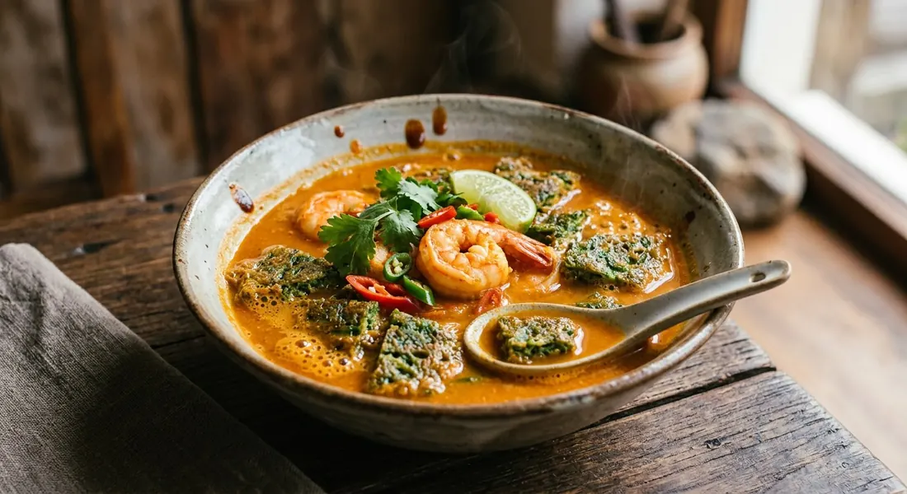

Sour curry with prawns and a cha-om omelette — hot, sour and salty broth carrying the herbal, eggy sponge that drinks it all up.

แกงส้ม (gaeng som) is the Thai sour curry — a clear, hot broth built on พริกแกงส้ม, a paste of chillies, shallots, garlic, turmeric and shrimp paste, soured with tamarind. ไข่ทอดชะอม (kai tod cha-om) is its perfect companion: an omelette of eggs and ชะอม, the thorny acacia's young shoots, which taste somewhere between green bean, pea and something faintly sulphuric — an acquired, deeply loved flavour.
Put them in one bowl and you have แกงส้มชะอมไข่ — the curry with the omelette in it. Wongnai's cookbook version floats the cut omelette on top of the finished curry; TrueID's ครัวพิศพิไล sinks it in and lets it drink. Either way the logic is the same: the sour broth soaks into the egg sponge, and every spoonful delivers both.
It is a dish of leftovers and market finds. ครัวบ้านพิม's recipe begins with her confession: she had half a pot of yesterday's gaeng som in the fridge, saw a 10-baht bunch of cha-om at the market, and built the meal around them. That is exactly how the dish behaves at home — it is what happens when a sour curry meets an omelette, in the order the cook decides.
| Thai | English | Amount |
|---|---|---|
| ชะอม | Cha-om leaves, picked | 100 g |
| ไข่ไก่ | Eggs | 2–3 |
| พริกแกงส้ม | Gaeng som curry paste | 100 g |
| เนื้อปลา | Steamed fish flesh, for the paste | 250 g |
| กุ้งสด | Prawns | 8 |
| ผักกาดขาว | White cabbage or mixed vegetables | 1 |
| น้ำมะขามเปียก | Tamarind paste | 50 g |
| น้ำปลา | Fish sauce | 2 tbsp |
| น้ำตาลปี๊บ | Palm sugar | 1 tbsp |
| มะนาว | Lime (optional finish) | 1 |
The tuna pot (Aroifin): tuna flesh pounded into the paste for body, 2 eggs and a cup of cha-om for the omelette, 20 minutes each way, 4 servings. The vegetable pot (Cookpad): no meat at all — 50 g cha-om, 3–4 eggs, cabbage and other vegetables, 1–2 tbsp paste, 3 tbsp tamarind, 1½ tbsp fish sauce, 2 tbsp palm sugar, finished with lime. The prawn-shell pot (Kapook): prawn shells boiled five minutes for the stock, then paste, tamarind, salt and a little palm sugar, prawns at the end, the omelette arranged around the bowl. The big pot (TrueID): a whole tilapia boiled in lemongrass-scented water and its flesh pounded with the paste, prawns and a pork-bone stock underneath, coconut sugar to season.
The protein. Prawns (Kapook, Pantip, Aroifin, TrueID, ครัวบ้านพิม), fish alone (Wongnai's fish-flesh paste), or no meat at all (Cookpad's vegetable pot). ครัวบ้านพิม adds her own twist: the curry itself is plain, and a fried salted fish (ปลาสลิดแดดเดียว) arrives on the side.
What goes into the paste. The old-style pots pound steamed fish into the paste — tuna (Aroifin), tilapia (TrueID), white fish (Wongnai) — for body and umami. Cookpad and Kapook use the paste straight from the tub. Pantip adds a tablespoon of shrimp paste (กะปิ) on top of the curry paste. Three answers, same pot.
The sour. Tamarind water carries the sour almost everywhere. Cookpad and Pantip finish with lime instead; Pantip names somkaek (garcinia) as the old alternative. The curry must be sour — how it gets there is the cook's business.
The stock. Plain water (Wongnai, Aroifin, Cookpad), prawn-shell stock (Kapook, boiled five minutes for flavour), or a full pork-bone stock with celery root (TrueID's ครัวพิศพิไล, the restaurant version). The dish scales from pantry water to stockpot.
The omelette. 2 eggs (Aroifin, TrueID) or 3–4 (Cookpad, Wongnai, ครัวบ้านพิม); cha-om measured in cups (1–2) or grams (50–100); fried thin and cut, or fried thick in the pot. Kapook's Valentine's version is a cha-om omelette cooked in a heart-shaped waffle iron, arranged around the bowl.
The prawn rule. Pantip alone is explicit: once the prawns go in, do not stir, or they turn fishy — let the boil settle around them and take the pot off. Everyone else simply says cook until the tails change colour, which amounts to the same thing.
This recipe is translated from the following Thai-language sources. Where they disagree, we've said so.
1. Wongnai — "แกงส้มชะอมไข่" (the fish-paste and cabbage version used here) — wongnai.com
2. Aroifin — "แกงส้มชะอมกุ้ง พริกแกงเข้มข้น" (the tuna-in-the-paste pot) — aroifin.com
3. Cookpad — "แกงส้มไข่ชะอม" by Blackbuarry (the vegetable pot, lime finish) — cookpad.com
4. Kapook — "แกงส้มชะอมไข่รูปหัวใจ" by Swin (the prawn-shell stock and waffle-iron omelette) — cooking.kapook.com
5. Pantip — "แกงส้มชะอมไข่" by Chorintanin (the do-not-stir prawn rule, somkaek) — pantip.com
6. ครัวบ้านพิม (Pim in th) — "แกงส้มชะอมไข่ทอด" (the leftover-curry version with fried salted fish) — pim.in.th
7. TrueID Food — "แกงส้มชะอมกุ้ง" by ครัวพิศพิไล (the pork-bone stock and tilapia pot) — food.trueid.net